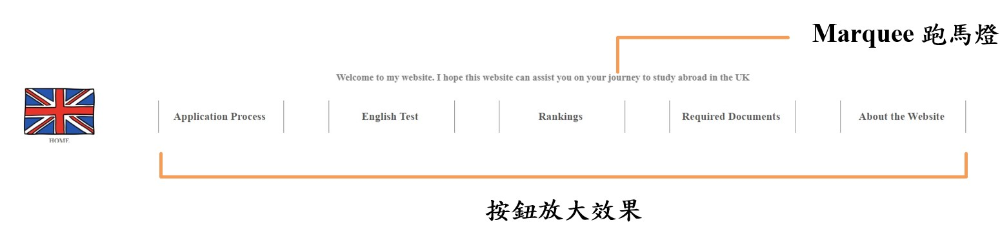
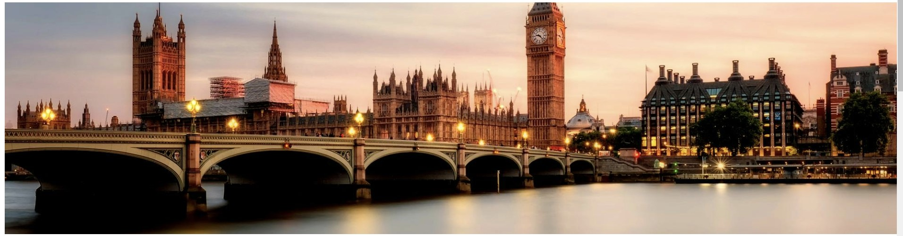
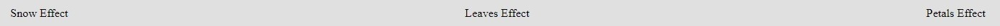
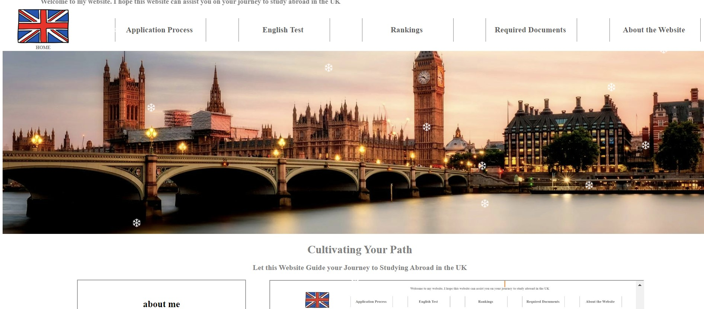
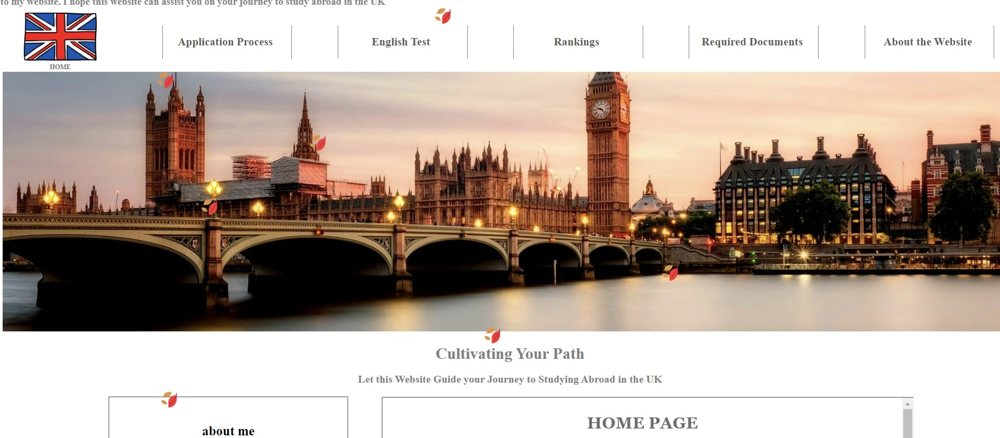
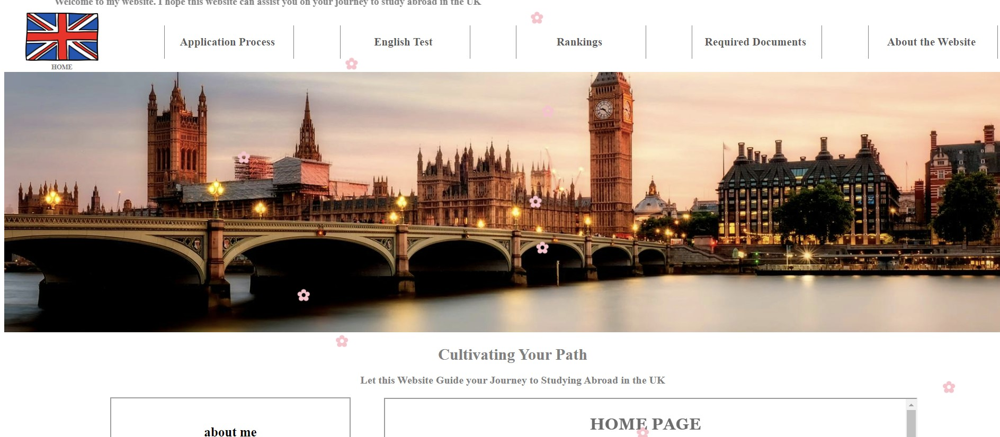

HOME PAGE
marquee、按鈕放大效果、固定視窗效果
- 於網頁最上建立一個marquee跑馬燈，以增加網頁的生動性。並且其下方的按紐，若鼠標移動至按紐，皆具有放大的效果。
- 同時這行table會固定保持在頁面上方，以便使用者使用。

圖片保持與頁面寬度一致
- 此圖片在使用者調整頁面大小時始終保持與頁面寬度一致，增強視覺衝擊力，提高使用者體驗。

超連結
- 信箱具有超連結功能，點選可以直接到傳送信箱頁面，參考網站也設有超連結。
頁面特效 : 雪花、落葉、花瓣
- 點選不同特效，即可產生相對應的特效，提升網頁的趣味性和觀賞性

雪花特效

落葉特效

花瓣特效

JQUERY 照片輪播
APPLICATION PROCESS
表格顏色安排
ENGLISH TEST
頁面內超連結
RANKINGS
頁面內超連結
圖片設計及安排
REQUIRED DOCUMENTS
頁面內超連結